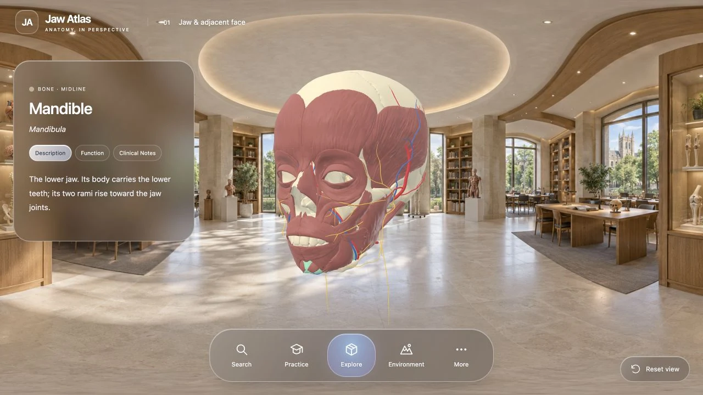
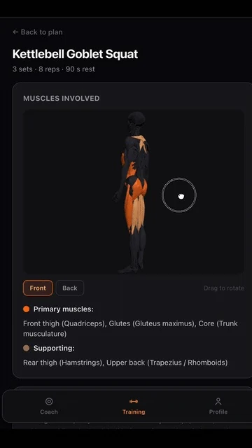
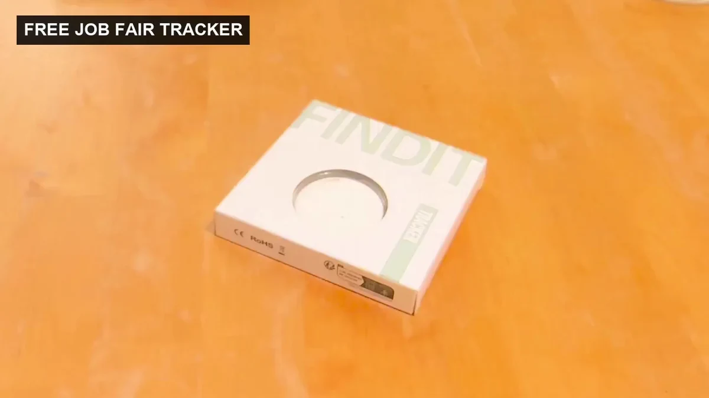
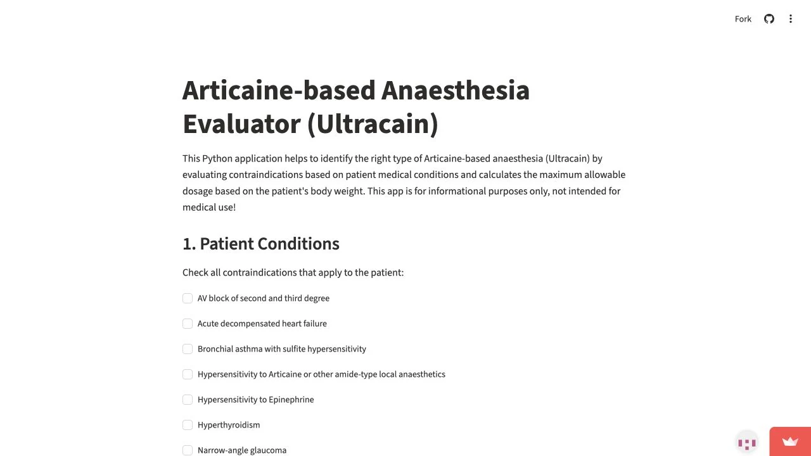
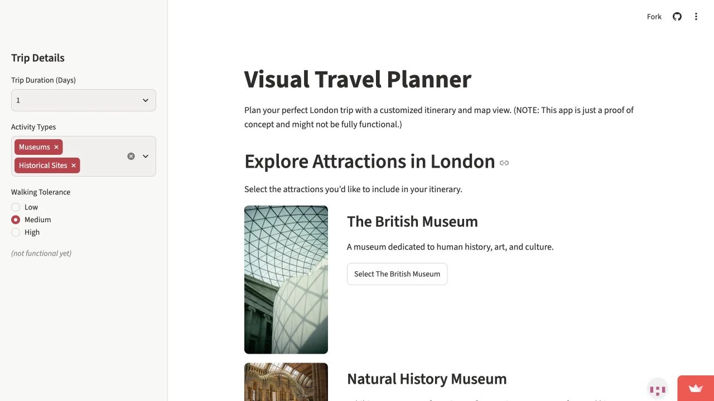

Healthcare · AI
Finmedio
Practice intelligence for automated dental billing and documentation. Winner of the Hacknation Venture Track and the transatlantic AI pitch competition.
At the intersection of care & curiosity
Dentist · AI in healthcare researcher
Tech and AI enthusiast
01 / Selected work
From healthcare to everyday experiments.
A few things I have been building.
Healthcare · AI
Practice intelligence for automated dental billing and documentation. Winner of the Hacknation Venture Track and the transatlantic AI pitch competition.

Education · 3D & VR
An interactive atlas of facial anatomy. Explore structures and layers, test your knowledge, and step into the experience in VR.


Movement · Computer vision
A kettlebell coaching prototype with tailored training plans, 3D exercise anatomy, camera-based rep counting and voice feedback.

Hardware · macOS
A small hardware experiment: turning a Bluetooth tracker from a job fair into a PowerPoint clicker with a native macOS helper.

Dentistry · Python
An educational prototype exploring Articaine contraindications and weight-based dosage calculations. For information only, not clinical use.

Travel · Python
Select places to explore, see them on a map and build a multi-day itinerary with a downloadable PDF. A playful proof of concept.
Global health · AI
Mapping healthcare facilities and identifying gaps in access to care.
View code for OpenCare (opens in a new tab)Research · Python
Retrieving and summarising research abstracts on AI in dentistry.
View code for AI Research Article Parser (opens in a new tab)Play · Indie game
A cozy game about making matcha, with soft visuals and a playful atelier atmosphere.
View game Matcha Atelier (opens in a new tab)Hardware · Venture building
A sensor hardware–software solution developed across two hackathons and a three-month venture programme. First place among more than 40 teams.
Private project02 / Ideas & evidence